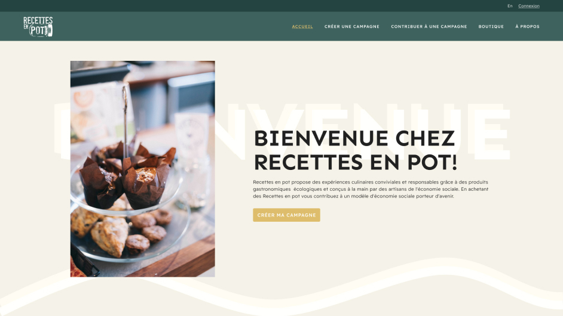

Recettes
en pot

Description
Recettes en pot est un projet de design et d'intégration web, axé sur la refonte d'un site web existant. Le défi était de respecter la charte graphique fournie tout en créant une toute nouvelle interface regroupant plusieurs pages.

Logiciels et langages
- Figma
- Visual Studio Code
Processus
Dans un premier temps, j'ai développé le design en suivant les directives de la charte graphique fournie. Une fois le design finalisé, j'ai effectué son intégration en utilisant HTML, CSS et JavaScript.